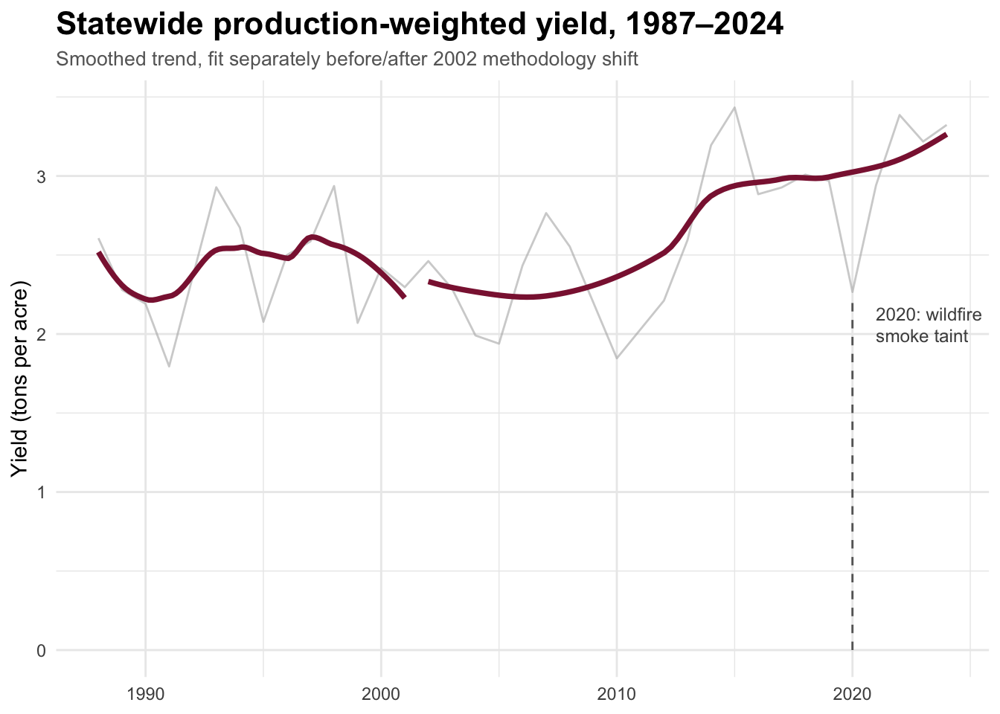
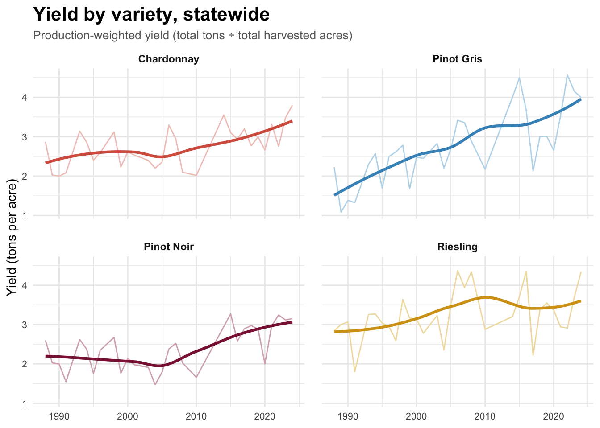
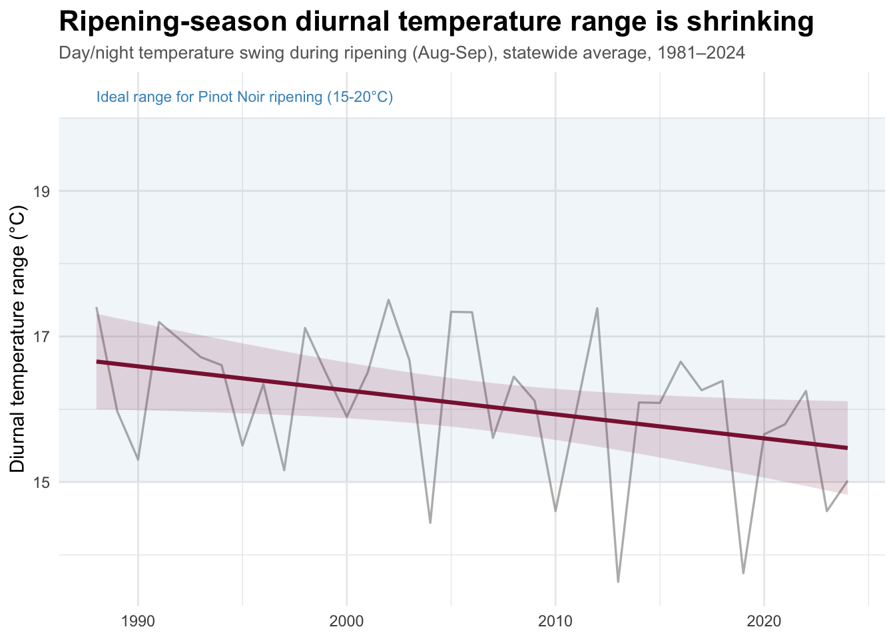
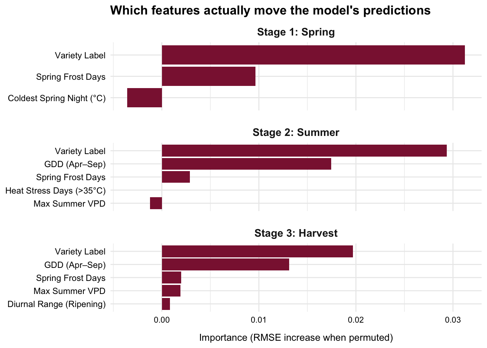
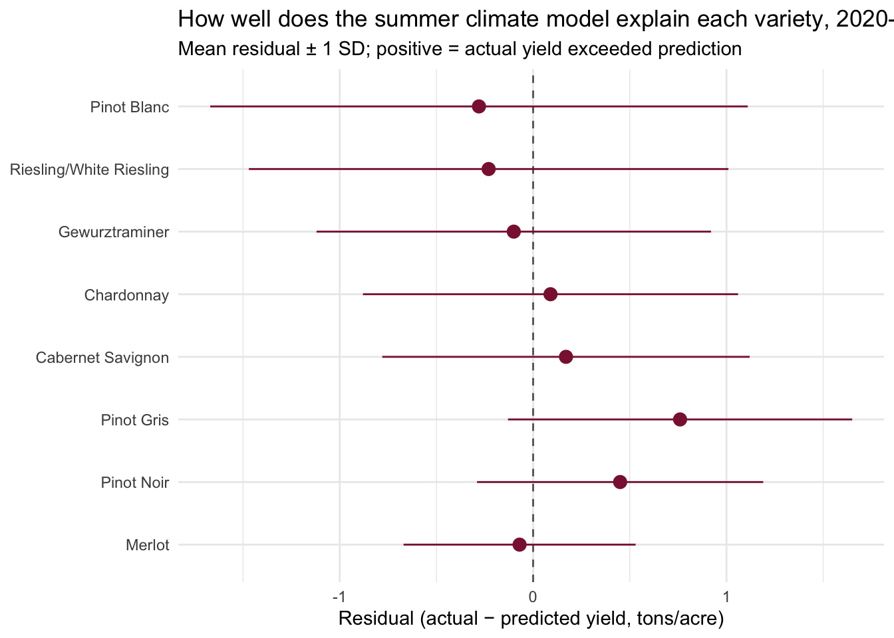

Results
Production and yield have, so far, kept climbing
Figure 5 plots statewide production-weighted yield (total tons produced divided by total acres harvested) for every year from 1987 to 2024. This isolates how productive Oregon’s vineyard acreage has become over time, independent of how much new acreage has been planted. The thin gray line traces the raw annual totals as reported while the bold red trend line summarizes the underlying pattern using a smoothed fit. Harvested acreage expanded by roughly the same order of magnitude as raw production did over this period, which means most of the industry’s growth has come from planting more acres rather than from getting more productive per acre. Yield itself has seen modest growth, averaging around ~2.5 tons per acre in 1990s and 2000s and settling closer to ~3 tons per acre in the most recent decade.
We note a clear interruption in 2020, corresponding to a season with severe wildfire smoke taint that resulted in a substantial share of unusable fruit among that year’s harvest. This represents a discrete event rather than a gradual climate-trend effect.

Figure 6 breaks down the production-weighted yield for each of the four leading varietals: Chardonnay, Pinot Gris, Pinot Noir, and Riesling. Each panel repeats the same visual structure as Figure 5: a thin line for the raw annual value and a bold smoothed trend layered on top.
We see a dramatic dip in Pinot Noir yield in 2020 while Pinot Gris and Chardonnay barely register the disruption comparatively. This selective impact is consistent with wildfire smoke taint, which binds more readily to red wine grapes because of their extended skin-contact fermentation process than to white wine production; anecdotally, 2020 also drove some producers toward “white Pinot” as a workaround, itself a sign of the industry’s adaptive capacity.
All varieties rebound to new all-time highs within three years. Indeed, outside of that one disrupted year, yield for Pinot Noir and the other key varieties has held steady or trended upward statewide, and the same holds when the data is cut by region instead of variety in Figure 7 (below). The historical pattern demonstrates that, within the range of GDD and heat stress Oregon has experienced thus far, warmer conditions have generally corresponded with higher yields per acre across nearly every variety and region.
However, this pattern is not uniform across varieties. Pinot Gris demonstrated the largest yield gain of the four key varieties (roughly a 35% increase), with Pinot Noir close behind (44%) and Chardonnay more modest (34%). In contrast, Riesling shows essentially no relationship between yield and warmth of the growing season (-2%). This could be attributed to the fact that its production is concentrated largely in the cooler North Willamette Valley that rarely experiences the warmer end of the state’s climate range.
We also note that Pinot Gris’ rising share of statewide production (Figure 1) is attributable not not only to an increasing share of planted acres, but also because this variety appears to yield higher volumes in the warmer seasons that are becoming increasingly common in Oregon.

Figure 7 repeats the same weighted-yield calculation from Figure 6, this time faceted by Oregon’s five wine-growing regions rather than by variety. Yield across nearly every region has held steady or trended upward, reinforcing our observation that, within the climate range Oregon has experienced so far, warming has generally not come at the cost of yield and in many regions it has coincided with higher yields overall.
Umpqua is the one region that breaks this pattern. To examine this trend in more detail, Table 1 (below) lays out four growing-season climate metrics for each region, averaged over 2002–2024, with regions ordered from warmest to coolest.
| Region | Mean GDD (Apr-Sep) | Mean summer high (°C) | Mean heat stress days | Mean ripening diurnal range (°C) |
|---|---|---|---|---|
| Columbia River at Large | 1363 | 30.8 | 11.8 | 16.5 |
| Rogue Valley | 1301 | 30.6 | 9.9 | 17.5 |
| Umpqua | 1212 | 28.9 | 5.0 | 16.4 |
| North Willamette Valley | 1162 | 27.8 | 4.3 | 14.6 |
| South Willamette Valley | 1154 | 28.6 | 5.4 | 16.3 |
Columbia River at Large is a clear outlier at the warm end, and the two Willamette Valley sub-regions anchor the cool end, with Rogue Valley and Umpqua occupying the middle of the range. We note that Umpqua ranks third of five regions by growing degree days, meaningfully warmer than either Willamette Valley sub-region, yet it has both the lowest-weighted yield of any region over 2002–2024 and by far the flattest yield trend over that period. In contrast, Columbia River at Large shows a yield trajectory that is consistent with other regions, indicating that the yield trend is not tied to temperature alone. Umpqua’s yield story may be driven by other factors unrelated to the climate variables tracked by our dataset. Potential factors could include variety mix, vineyard scale, soil composition, or terrain complexity. We flag it here as a pattern worth further investigation rather than a settled finding.
Our overall observation is that warmer temperatures appear to have limited or somewhat positive impact on yield. However, warmer seasons can raise yield while simultaneously degrading the flavor and quality characteristics that define Oregon’s premium wines, particularly Pinot Noir.
The quality concern hiding under a healthy yield trend

Figure 8 demonstrates a diurnal range that has narrowed from roughly 17°C in the 1980s to roughly 15°C today, indicating that nights are warming faster than days. This is consistent with a pattern documented globally in the climate literature and generally attributed to changes in cloud cover trapping heat overnight [@ucs2022nights; @liu2024dtr]. This day-night temperature swing is a key mechanism behind Oregon’s suitability for growing Pinot Noir: warm days build sugar, while cool nights slow the grape’s respiration long enough to retain complex acidity, color, and aromatic qualities in the grape [@ajev2012dtr]. Controlled experiments on Pinot Noir, specifically, have found that compressing this range alters organic acid metabolism and can suppress color accumulation, and a companion study found Pinot Noir was one of the varieties most sensitive to elevated diurnal temperature among the major red varieties tested [@frontiers2025bunchheating; @pmc2022highTemp].
This narrowing diurnal range is a potential risk to wine quality that has not surfaced in the production metrics alone. Diurnal range operates on wine quality through a physiological process that is more nuanced than heat-accumulation metrics in isolation, and models built on yield alone will miss this leading indicator entirely. Future research could evaluate this risk through proxy indicators of wine quality such as price premiums or critic-score text mining.
Predicting yield across the growing season
We next aim to create a predictive model built on two key observations from our analysis thus far: (1) yield has been resilient across the historical climate range and (2) the climate signal accumulates in stages over the course of the growing season. We argue that a model built only on a single end-of-season snapshot is less useful to a wine grower who experiences these climate conditions sequentially throughout the annual growth cycle.
Insights derived from our predictive model are intended to help wine growers understand not only what climate interactions have the ability to impact yield, but when those impacts would be most visible in the growing season, and for which varieties they matter most. We modeled yield_derived (production tons per harvested acre) using a Support Vector Machine (SVM) with a radial basis function (RBF) kernel, tuned via Cross-Validation (CV). An SVM was selected because the usable sample, roughly 1,000 region-by-variety-year observations, is small enough that a kernel method with relatively few tunable parameters is less prone to overfitting, while the RBF kernel still captures the non-linear climate-yield relationships suggested by our correlation analysis. Our small observation size contained class imbalances in varietal observations, particularly in Merlot and Pinot Blanc, where Pinot Blanc’s imbalance ratio against Pinot Noir was 3.7x, that were balanced in the training data through weighting samples by inverse frequency.
Adjust for class imbalance
- Weight = inverse of how many rows that variety-by-region combination has, normalized so weights average to 1
- Down-weights the influence of well-represented groups (Pinot Noir, North Willamette Valley) relative to thin ones (Pinot Blanc, Merlot)
Table 2 shows the resulting sample weight for each region-by-variety combination, ranked from most to least up-weighted. Groups with the fewest rows receive the largest weights, so the model treats each combination as roughly equally informative during training rather than letting the best-sampled groups (Pinot Noir, Chardonnay) dominate simply because they have more rows.
| Region | Variety | N rows | Sample weight | |
|---|---|---|---|---|
| Columbia River at Large | Pinot Gris | 20 | 1.43 | Most up-weighted (thinnest groups) |
| South Willamette Valley | Merlot | 20 | 1.43 | Most up-weighted (thinnest groups) |
| Rogue Valley | Pinot Blanc | 21 | 1.36 | Most up-weighted (thinnest groups) |
| North Willamette Valley | Pinot Blanc | 21 | 1.36 | Most up-weighted (thinnest groups) |
| Umpqua | Pinot Gris | 23 | 1.24 | Most up-weighted (thinnest groups) |
| Columbia River at Large | Gewurztraminer | 24 | 1.19 | Most up-weighted (thinnest groups) |
| Columbia River at Large | Merlot | 25 | 1.14 | Most up-weighted (thinnest groups) |
| Umpqua | Merlot | 25 | 1.14 | Most up-weighted (thinnest groups) |
| Rogue Valley | Merlot | 25 | 1.14 | Most up-weighted (thinnest groups) |
| Umpqua | Cabernet Savignon | 27 | 1.06 | Most up-weighted (thinnest groups) |
| North Willamette Valley | Pinot Noir | 31 | 0.92 | Least up-weighted (best-sampled groups) |
| North Willamette Valley | Gewurztraminer | 31 | 0.92 | Least up-weighted (best-sampled groups) |
| North Willamette Valley | Chardonnay | 31 | 0.92 | Least up-weighted (best-sampled groups) |
| Columbia River at Large | Riesling/White Riesling | 31 | 0.92 | Least up-weighted (best-sampled groups) |
| Umpqua | Riesling/White Riesling | 31 | 0.92 | Least up-weighted (best-sampled groups) |
To capture this compounding effect of time and climate information, we fit three separate models, each representing what a grower would actually know at that point in the season: a spring model (frost risk only), a summer model (adding growing degree days, heat stress, and vapor pressure deficit), and a harvest model (adding veraison-to-harvest GDD, October precipitation, and ripening diurnal range).
All three stages were evaluated on the same time-blocked pre-2020 train/test partition rather than a simple random split. Oregon’s yield has trended upward over the study period, and its climate is itself autocorrelated from one year to the next, so a random split risks placing a test year directly adjacent to a training year from the same short-term trend, letting the model interpolate between nearby years rather than genuinely predicting an unseen one. To guard against this, we split pre-2020 data into contiguous three-year blocks, assigned roughly 10% of rows to test blocks spread across the full date range, and removed a one-year buffer from training on each side of the test block, so that no training year sits immediately adjacent to a test year. All three growing-season stages were tuned and evaluated on this same partition, so that any difference in performance across stages reflects the additional climate information available at that stage, not a different sample of years.
Post-2020 data was held out entirely from training and evaluated separately, as a case study rather than a fourth fold. We treat 2020 onward this way throughout the report because the wildfire smoke taint that disrupted that year’s harvest was a discrete event rather than part of the underlying gradual climate trend our models are built to capture; folding it into training on equal footing with other years would risk attributing a smoke-driven production loss to ordinary climate variability.
For a baseline metric against the SVM’s performance, we ran a weighted least squares linear model along the same sample splits. If the linear model found a relationship the SVM did not, that would point to the SVM being poorly suited to this data, rather than the underlying relationship being genuinely weak. Conversely, if the SVM detected a relationship the linear model could not, that would suggest a non-linear climate-yield relationship the RBF kernel is able to capture but a linear model cannot.
Climate becomes predictive mid-season, then declines
| Stage | RMSE | R² |
|---|---|---|
| Stage 1: Spring | 1.139 | 0.012 |
| Stage 2: Summer | 1.105 | 0.069 |
| Stage 3: Harvest | 1.123 | 0.040 |

Table 3 and Figure 9 show held-out test performance for all three growing-season stages. The relationship between climate and yield is modest throughout, an R² range of roughly 0.01 to 0.07. The staged models show that climate information is not predictive in the spring, becomes predictive in the summer, and then declines in predictive power once harvest-stage features are added. This pattern is consistent with our correlation analysis, which found that growing degree days and heat stress were the most strongly correlated climate features with yield, while veraison-to-harvest GDD, October precipitation, and ripening diurnal range were not strongly correlated with yield.
Figure 9 shows a tighter spread of residuals for the summer model than for the harvest model, despite the harvest model having strictly more information available to it. This suggests that the harvest-stage features are not adding predictive value and may even be introducing noise into the model. Because of this, we use the summer model, not the full-season harvest model, as our final model for the post-2020 case study below.

Figure 10 breaks the same residuals down by variety instead of by stage. The model is best-behaved for Oregon’s most heavily represented varieties, Pinot Noir and Chardonnay in particular show residuals centered close to zero across all three stages, while the state’s thinner varieties show wider, more biased spread that does not meaningfully improve as later-stage features are added. This is the first hint of a pattern that becomes explicit once we look at which features each model actually relies on: when climate information alone cannot fully explain yield for a given variety, the model has to fall back on something else to make up the difference, and that something else is knowing which variety it is looking at in the first place.
Model reliance on variety identity vs. climate features

Figure 11 shows why the residual patterns in Figure 10 look the way they do. In the spring model, variety identity dominates by a wide margin, unsurprising given that the only climate features available at that point, frost risk and coldest spring night, showed no meaningful correlation with yield in our statistical analysis. With almost no useful climate signal to draw on, the model falls back on which variety it is looking at as its primary basis for prediction.
Variety identity remains the single most important feature in the summer model as well, but growing degree days now emerges as a substantial contributor alongside it, rather than a negligible one. This lines up directly with Table 3: the summer model’s jump in R² is attributable specifically to GDD becoming informative once it enters the feature set, not to any change in how much the model relies on variety. Put together, Figures 10 and 11 tell a consistent story: variety identity is doing real work throughout, GDD adds a genuine, if modest, second signal starting in the summer model, and the later, more granular harvest-stage features neither reduce the model’s reliance on variety nor add a comparable climate signal of their own.
Does the post-2020 period leave a more visible mark on some varieties?
We treat 2020 as a discrete disruption rather than part of the underlying climate trend, so it was held out entirely from training. As a case study, we refit the summer model, the best-performing stage, on all pre-2020 data and evaluated it against each variety’s actual yield from 2020 through 2024. A wide or biased residual here does not necessarily mean climate hit that variety harder; the summer model has no wildfire or smoke-taint feature at all, so a large residual only tells us climate and variety together fail to explain that variety’s post-2020 yield, for reasons the model cannot see.
| Variety | Mean residual | SD of residual | N (2020-2024 rows) |
|---|---|---|---|
| Pinot Blanc | -0.28 | 1.39 | 10 |
| Riesling/White Riesling | -0.23 | 1.24 | 25 |
| Gewurztraminer | -0.10 | 1.02 | 20 |
| Chardonnay | 0.09 | 0.97 | 25 |
| Cabernet Savignon | 0.17 | 0.95 | 19 |
| Pinot Gris | 0.76 | 0.89 | 17 |
| Pinot Noir | 0.45 | 0.74 | 25 |
| Merlot | -0.07 | 0.60 | 15 |

Table 4 and Figure 12 show that post-2020 unpredictability is not evenly spread across varieties, and it does not fall where our earlier smoke-taint finding might suggest. Pinot Blanc and Riesling show the widest residual spread and the most negative mean, meaning the model consistently overestimates their yield and does so inconsistently from year to year; Pinot Blanc’s result, drawn from only 10 rows, is the thinnest sample in this case study and should be read with particular caution.
Pinot Noir, the variety our production-weighted yield analysis showed took the sharpest single-year hit from 2020 wildfire smoke, tells a different story once the window widens to include the recovery years. Its residual spread is the second-tightest of any variety, and its mean residual is solidly positive, meaning actual yield from 2020 through 2024 ran above what climate alone would have predicted. This is consistent with, rather than a contradiction of, our earlier framing of 2020 as a discrete, one-year disruption: across the full post-2020 window, Pinot Noir’s climate-yield relationship looks stable, and the industry’s documented rebound (Figure 6) shows up here as a model that continues to underestimate, not overestimate, the variety’s recovery.
Because our summer model was never built to detect wildfire smoke specifically, we read this pattern as a starting point for further investigation rather than a settled explanation. Whether Pinot Blanc and Riesling’s post-2020 unpredictability reflects a genuine variety-specific climate response, the compounding effect of multiple fire years our features do not capture, or simply the smaller and noisier samples these two varieties carry throughout this analysis, is a question this dataset alone cannot resolve.